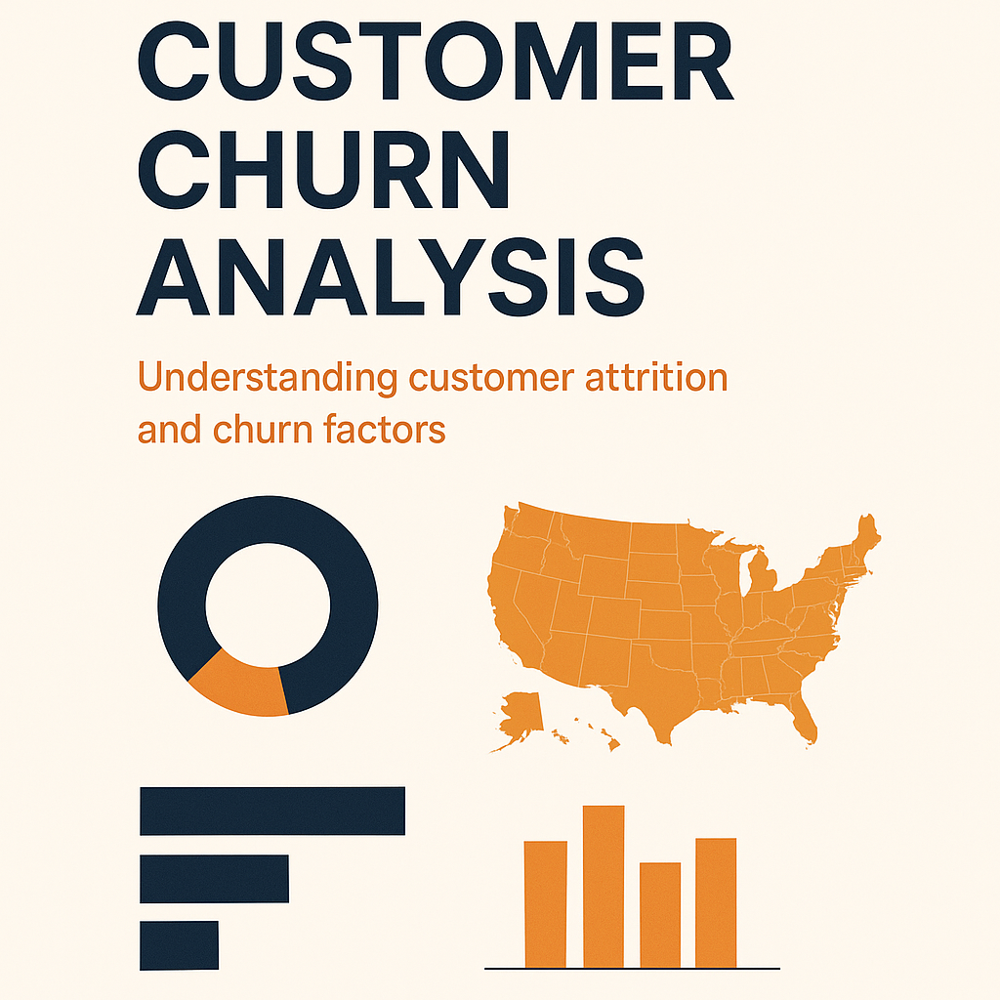
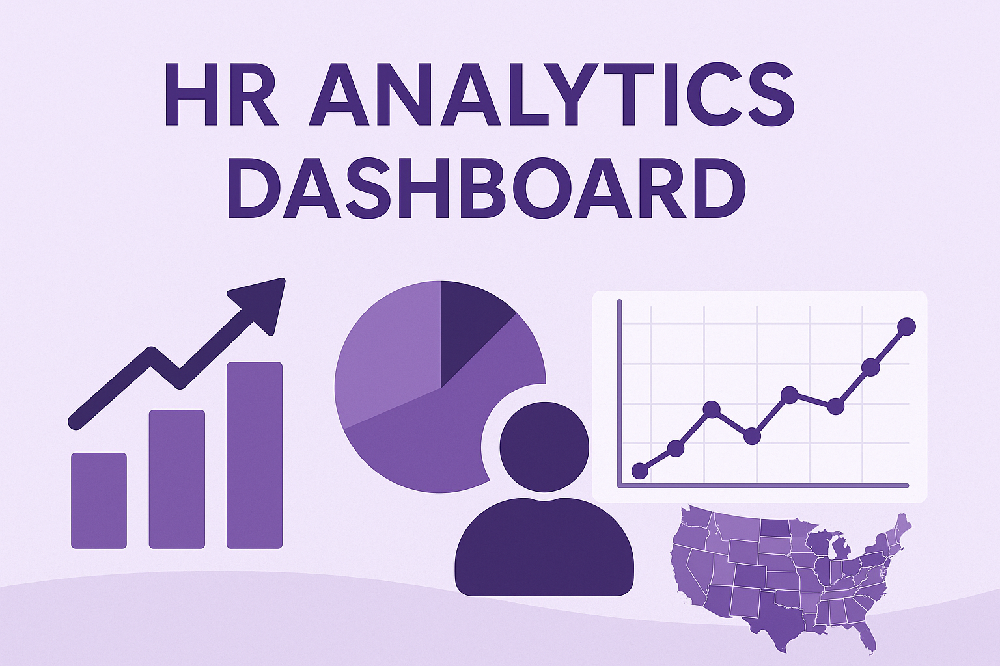

A data-driven study identifying why customers leave by examining demographics, usage patterns, and regional trends.
Provides key churn metrics, visual insights, and actionable recommendations to help businesses improve retention and reduce overall churn.


A Power BI project that explores customer churn patterns for Databel using interactive dashboards and DAX measures.
It highlights churn metrics, demographic behavior, and service usage correlations.
The analysis reveals key churn drivers to support better customer retention decisions.

A Power BI dashboard analyzing workforce data for Atlas Labs, covering employee demographics, performance, and attrition trends.
The report visualizes the entire employee lifecycle to uncover key HR insights and turnover drivers.
It helps HR teams make data-driven decisions to improve retention, engagement, and organizational performance.

A data-driven Power BI dashboard that visualizes pizza sales performance, combining SQL Server analytics with interactive insights.
It tracks revenue, orders, product popularity, and sales trends across days, months, sizes, and categories.
The report helps businesses identify opportunities, optimize offerings, and enhance strategic decision-making.